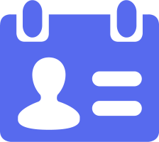
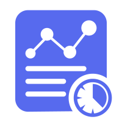

首页
登录/注册
设备链接监测
睡眠实时监测
单日报告
本周报告
科普说明
开始睡眠监测
暂停睡眠监测

个人基本信息
用户名：Spark
年龄：21
体重：52kg
身高：162cm
既往病史：无反应觉醒综合征
用药记录：金刚烷胺，唑吡坦
时间
脑电图特征
眼动信号特征
患者睡眠状态
纺锤波调控音乐
播放
暂停

监测记录
上一次记录时间：
2025.03.13
22:50-8:30
>
监测报告
社区版报告入口
专业版报告入口
>